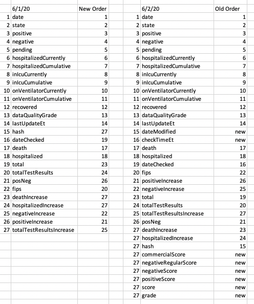

Columns in states_daily_4pm_et.csv reordered
Issue number 480
johnrolfeellis opened this issue on June 2, 2020 at 11:03 pm
In addition to adding new columns, the old columns in states_daily_4pm_et.csv have been reordered. Was the reordering intentional? The tables in my spreadsheets will need some reworking to accommodate the reordering.

Hi @johnrolfeellis, we appreciate the feedback. We’re sorry about the disruption to your workflow.
Our API page describes our data structure policies. We do have a column deprecation policy similar to what you suggest, but we don’t guarantee column order and recommend instead looking up by column name. In Excel, you could do this by having an intermediate sheet that looks up columns by name from the raw data so that the rest of your spreadsheet can rely on the intermediate sheet’s column order.
Thanks for your reply. I already use named columns in Excel tables (which is Excel best practice), but your suggestion makes for more work, not less.
For future reference, in case you decide to make your exported data more Excel-friendly, here are three approaches to using the .csvs and the problems with each when column order changes. My conclusion is that the only viable Excel-friendly approach is to preserve column order.
-
Your suggestion is to have an intermediate sheet that looks up columns by name from the exported .csv. The issue with this is that every time you want to update to a new version of the .csv, which has more rows, you need to add manually more rows to the intermediate sheet, which is straightforward but easy to forget and easy to make mistakes. If you forget to add the rows, there’s nothing to alert you that your calculations aren’t including all the data from the .csv.
-
My current method is to put the contents of the .csv into a sheet with a named table, and then refer to the columns by name rather than cell references. To incorporate a new version of the .csv, I copy and paste all of its contents into the named table, and Excel will automatically add the new rows to the table. If there are new columns added at the end, the table will be automatically extended to include them.
Unfortunately, if the order of columns is changed, Excel gets confused, and previous named references to a column, e.g. states_daily[hospitalizedIncrease], will get changed to some other column, e.g. states_daily[deathIncrease]. Whether this is a bug or a feature is besides the point – Excel has long worked this way and it’s very unlikely Microsoft will ever change it. But at least in this approach, you pretty quickly notice that the column order has changed, since all the calculations yield screwy results.
When the column order changes, I first change the order of the columns in the named table to match the new .csv order, and then I copy and paste. Since this occurs infrequently, this method 2 is less work and error-prone than you suggested method 1.
- Another method is to save the .csv as a .xlsx and mark its contents as a named table. Then the main workbook can refer to it using an external reference, e.g. states_daily_4pm_et!states_daily[hospitalizedIncrease]. Each time a new .csv is published, I can open it, redefine the named table, and save it as a .xlsx, overwriting the old .xlsx. If the order of the columns changes, the references to the named columns continue to work properly.
Unfortunately, this approach has a significant, fatal drawback: Excel won’t do name completion of external references when typing formulas (e.g. it won’t complete any of states_daily_4pm_et!states_daily[hospitalizedIncrease]).
Four more columns were added last night, in the middle of the old columns (totalTestsViral, positiveTestsViral, negativeTestsViral, positiveCasesViral).
Would it be possible to always add new columns to the end, and if old columns are retired, just mark them with tombstones (like “(deleted)”)? It’s moderately painful to adjust Excel spreadsheets when the named columns of tables change order – Excel gets confused when you copy and paste from the .csv into your worksheet. The workaround is to manually add and delete columns from the table so they match the new order, and then copy and paste from the .csv to your worksheet.